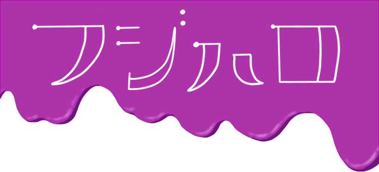

フジハロとは
藤枝ハロウィンを略してフジハロと言います。
昨年2016年に第1回が開催され、今回が2回目になります。
会場は藤枝市民文化会館で10月28日に行われます。
LIVEやゲーム、仮装コンテスト等を行います。
当日の日程
9:30 OPEN
10:20 全員で集合写真《Before ver.》
10:30 OPENING 竹村体育教室
10:45 GAME説明
11:00 GAME➀
11:30 V-Dance＆竹村体育教室
11:45-12:30 Break Time(休憩)
12:30 フジハロコレクション♪
12:40 Vsound LIVE♪
miyu,Jyunya,Jewel,悠甫
13:20 GAME➁
14:00 GAME➂
14:20 森一馬 LIVE♪
15:00 チーム戦 中間発表
GAME➃
15:20 フジハロコレクション♪
15:30 結果発表 と仮装コンテストの表彰
15:50 FINAL みんなで「恋」ダンス
16:00 全員で集合写真《After ver.》
16:30 藤枝駅へ出発
ホーム